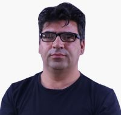

|  |
Asif PopalMobile: 0767 105 600Address: Khair khane Kabul AfghanistanE-mail:asifppl@gmail.com & asifppl@yahoo.comDate of Birth: 1984/06/17Nationality: Afghan |
A multi-skilled IT/Media Officer with good all-round supervisory and technical expertise. Very capable with a proven ability to ensure the smooth running of Media systems and to provide IT services that will improve the efficiency and performance of a company. Extensive practical knowledge of complex systems builds, hardware and software testing, PCB testing, network support, technical support and computer repairs. Looking for a new and challenging position, one that will make best use of my existing skills & experiences also further my personal development.
IT & Graphic Designer Turk Maarif Vakif international 12 April 2020
| Year | Work | |
|---|---|---|
| 2010 - 2014 | MBC consturaction Comanpy | ⭐️ ⭐️ ⭐️ ⭐️ ⭐️ |
| 2015 - 2016 | Creative CCI USAID | ⭐️ ⭐️ ⭐️ ⭐️ |